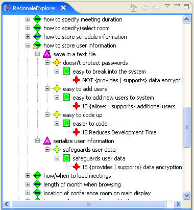
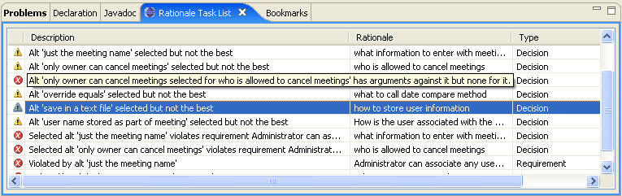
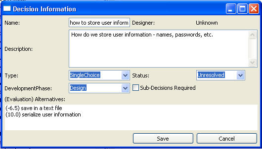
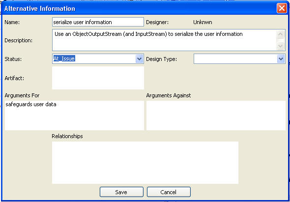
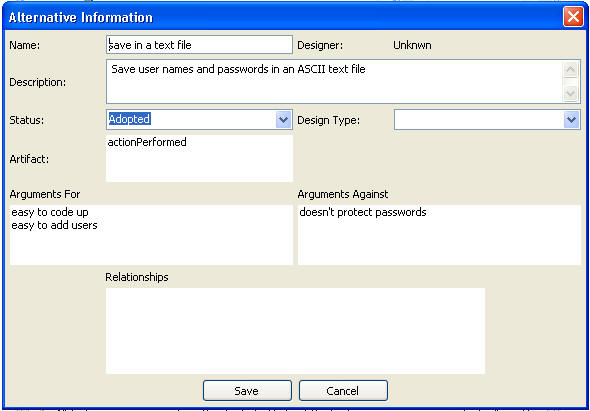
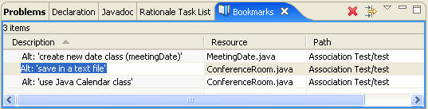
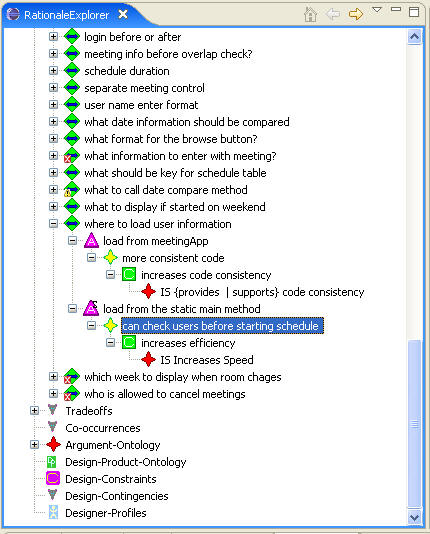

The decision is shown with a yellow warning icon on it because the selected alternative, “save in a text file”, was not the best choice. This is also shown in the Rationale Task List in the following figure.

If the decision is edited, the arguments for and against it, and their evaluation, are shown to the user. The following figure shows the decision and that the selected alternative “save in a text file” has a negative value, while the alternative “serialize user information” has a positive one.

Displaying the alternative “serialize user information” gives additional information about that choice and tells how it can be implemented. The following figure shows the alternative and the description that tells the maintainer that they can use ObjectOutputStream to serialize the user information.

The next step is to find the place in the code where the information is stored. A logical place to start is to find where the currently selected alternative, “save in a text file”, is implemented. Editing the alternative (see the following figure) shows that it is associated with the method “actionPerformed.”

If this name is not familiar to the maintainer, they can find the code via the Bookmarks Display. The following figure shows the Bookmarks Display showing the bookmark that maps the alternative to the code. Double-clicking on that alternative brings up the appropriate code in the editor.

The maintainer can also use SEURAT to find the code where the user information is loaded. The following figure shows the Rationale Explorer with a decision on “where to load user information.” The selected alternative is “load from Login Users class” and the maintainer can either find this class in the Eclipse Package Explorer or use the bookmarks as described above.

After making the necessary changes, the maintainer should go back to the rationale and select the new alternative, associate it with the appropriate code, and de-select the old one. This is not currently enforced. When changing the status for the two alternatives, the maintainer has the opportunity to enter a reason for the status change. The maintainer should also remove the association to the code from the alternative that is no longer selected.